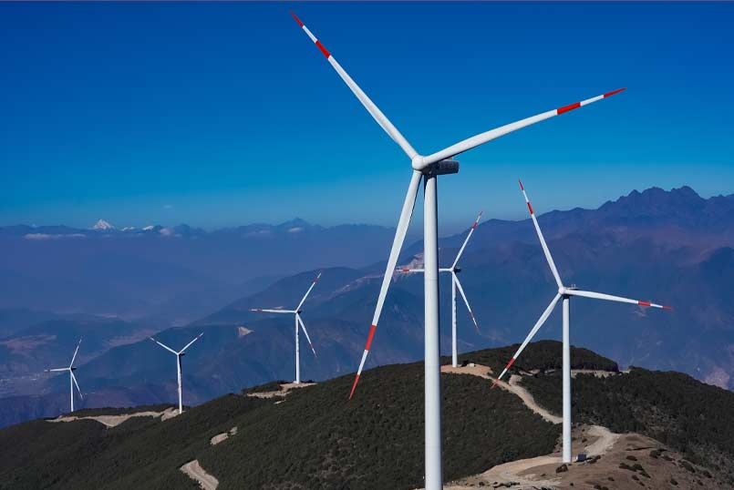
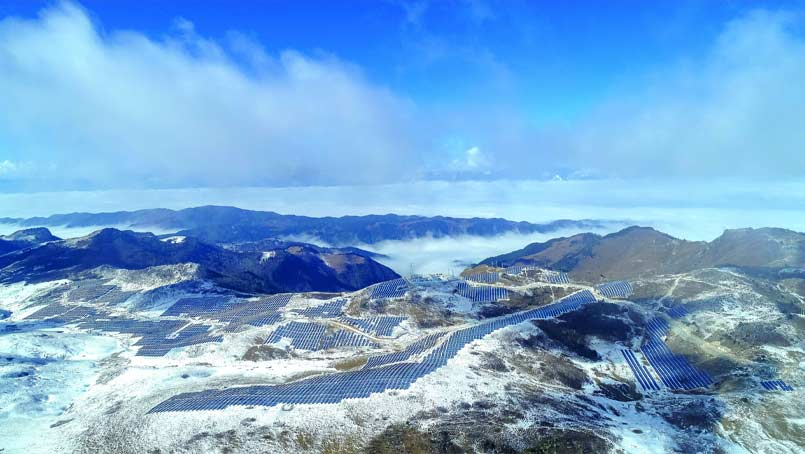

重温红色记忆
| 四川凉山
四川凉山——风有故事，光有传奇，熊熊燃烧着不灭的红色火种。
红军长征二万五千里，在川行程一万五千里。蜀道之难，难于上青天，但最终都被踩成了红军脚下的“泥丸”。在这里，红军彝海结盟过凉山，谱写了一曲多民族合力制胜的凯歌；在这里，红军强渡大渡河，飞夺泸定桥；在这里，红军翻越了几十座大山，包括人迹罕至、终年积雪的雪山，数次挑战人类生理极限……

奔腾不息的金沙江，滋养了沿江两岸世代繁衍生息的百姓。然而，在金沙江穿流而过的众多地区中，凉山州因特殊的历史、自然、文化等多重因素交织，成为全国深度贫困的“三区三州”之一。
三峡能源西南分公司凉山党支部就扎根在平均海拔3200—3600米的大凉山区。这里有着三峡集团海拔最高的风电和光伏项目。一群可爱的三峡人，像矗立的风机和光伏板一样，扎根在高原，不惧严寒与艰险，探索智能运维，展示“风光”的魅力——
这里一年一场风，从春刮到冬，高高矗立的风机隐没在浓厚的云层中，正像曾经的红军战士一样，驻守着这片土地。

这里一天一片光，从头晒到脚，蓝色的光伏板绵延伸展，如同一片湛蓝的大海，让原本的荒芜大地源源不断地输送出清洁能源。

他们以绿色低碳助力地方经济发展：截至目前，三峡能源已在凉山州投运新能源电站7座，为普格县、布拖县等深度贫困地区脱贫摘帽作出了积极贡献；
他们以行动解决民生之困：先后直接向凉山州会理县、普格县和布拖县等地区的困难中小学生、村民捐赠资金用于道路修建或教育帮扶等，树立了负责任央企的良好形象……（作者：饶芯榕）
中国三峡出版传媒公司
出品
出品